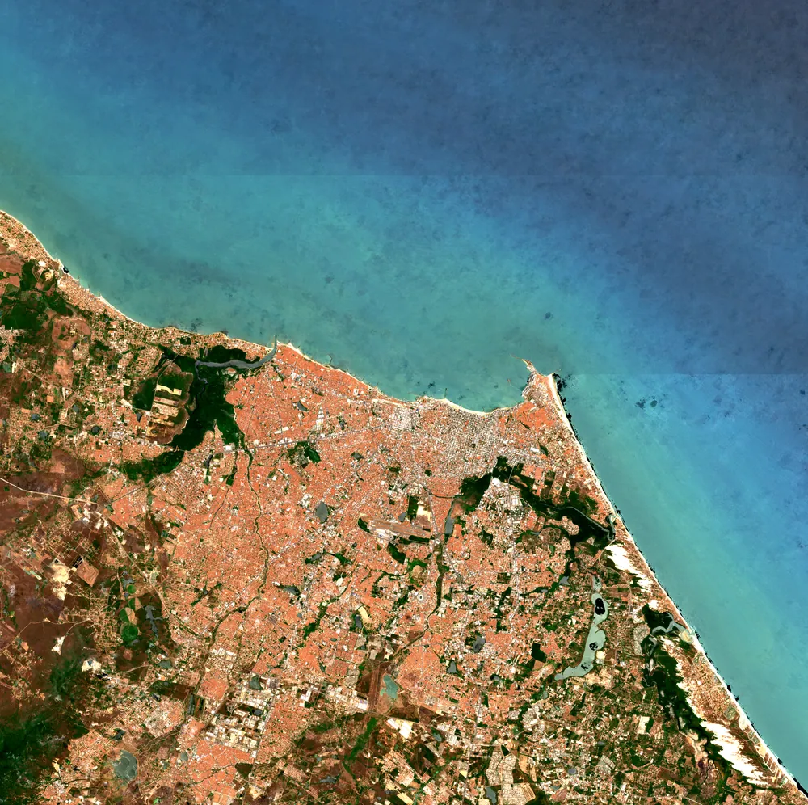
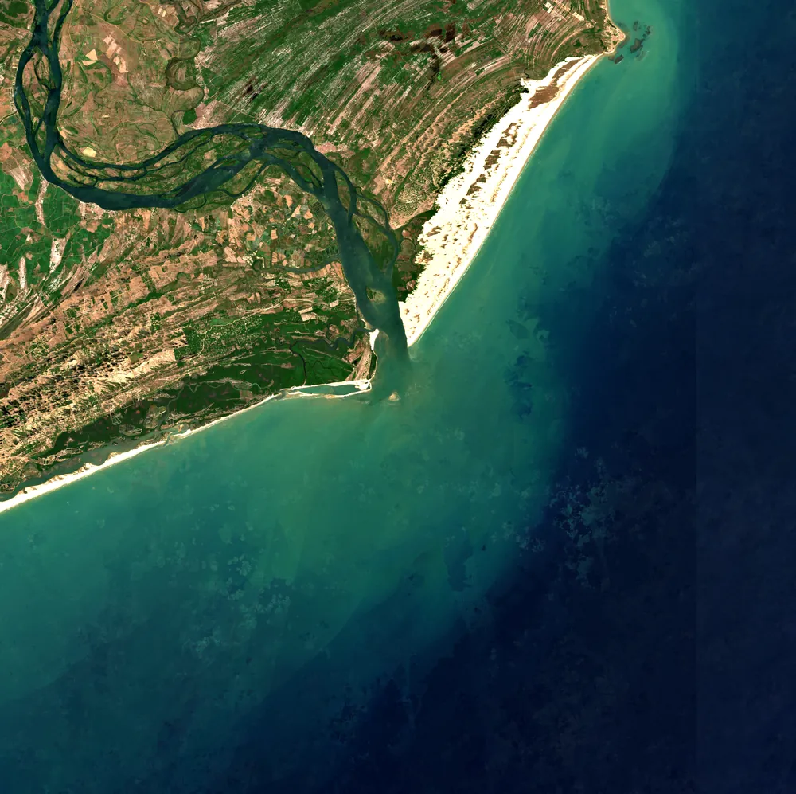
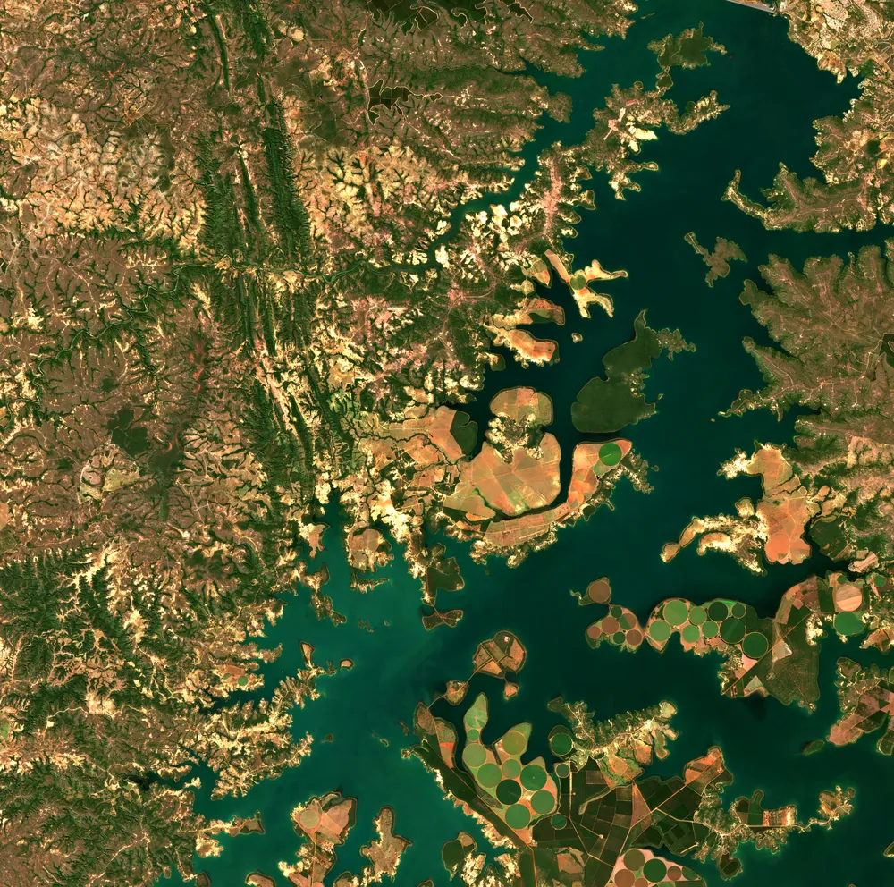
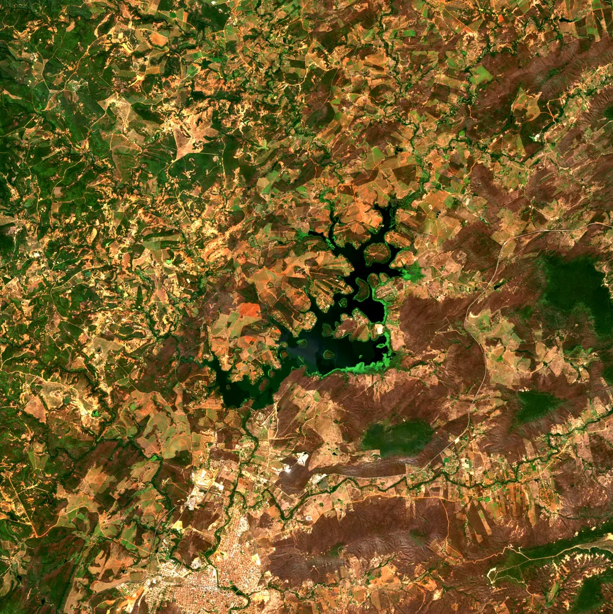

Quatro cenas, um pipeline
Composições Sentinel-2 de quatro geografias brasileiras, todas processadas pelo mesmo script: a costa urbana de Fortaleza, a foz do rio São Francisco, o reservatório de Três Marias e o açude da Barragem do Rio Salinas. Para cada cena, três leituras do mesmo território: cor verdadeira, vegetação (NDVI) e água (MNDWI).
- 4 cenas
- 72 imagens Sentinel-2
- 1 pipeline
Fortaleza, Ceará
Recorte de 40 por 40 km sobre a capital cearense: a mancha urbana ao sul, a linha de costa e o oceano Atlântico ao norte. Composição da estação seca de 2025.
- 860,2 km²Área de água
- 731,7 km²Área de continente
- 0,286NDVI mediano no continente
- outubro a dezembro de 2025Período da composição
- 23Imagens na composição
Foz do São Francisco, divisa de Alagoas e Sergipe
Recorte de 40 por 40 km sobre o encontro do rio com o mar: o delta, os bancos de areia, as dunas do Pontal do Peba e a planície costeira das duas margens. Composição do núcleo seco de 2025 e 2026.

- 1.121,5 km²Área de água
- 499,0 km²Área de continente
- 0,514NDVI mediano no continente
- novembro de 2025 a janeiro de 2026Período da composição
- 24Imagens na composição
Reservatório de Três Marias, Minas Gerais
Recorte de 40 por 40 km sobre o corpo principal do reservatório, no alto São Francisco: os braços dendríticos, os pivôs de irrigação e o cerrado do entorno no inverno seco. Composição da estação seca de 2026.

- 451,2 km²Área de água
- 1.155,6 km²Área de continente
- 0,541NDVI mediano no continente
- maio a julho de 2026Período da composição
- 13Imagens na composição
Barragem do Rio Salinas, Salinas, Minas Gerais
Recorte menor, de 20 por 20 km, porque o corpo d'água é pequeno: o açude construído pela CEMIG nos anos 1990 para perenizar o rio Salinas, 10 km ao norte da cidade, no semiárido do norte de Minas. Composição da estação seca de 2026.

- 8,4 km²Área de água
- 404,1 km²Área de continente
- 0,472NDVI mediano no continente
- maio a julho de 2026Período da composição
- 12Imagens na composição
As quatro cenas lado a lado
As composições não são simultâneas. Cada coluna corresponde ao período indicado, escolhido pela estação seca de cada regime climático: as duas primeiras cenas são de 2025 e 2026, as duas últimas são de 2026. Os recortes também diferem: 40 km nas três primeiras, 20 km na última.
| Métrica | Fortaleza | Foz do São Francisco | Três Marias | Barragem de Salinas |
|---|---|---|---|---|
| Área de água | 860,2 km² | 1.121,5 km² | 451,2 km² | 8,4 km² |
| Área de continente | 731,7 km² | 499,0 km² | 1.155,6 km² | 404,1 km² |
| NDVI mediano no continente | 0,286 | 0,514 | 0,541 | 0,472 |
| Período da composição | out a dez de 2025 | nov de 2025 a jan de 2026 | mai a jul de 2026 | mai a jul de 2026 |
| Imagens na composição | 23 | 24 | 13 | 12 |
A medida depende da régua
O perímetro de uma feição natural cresce conforme a resolução de medição aumenta: a mesma costa de Fortaleza dá quatro valores em quatro escalas. Por isso, toda medida de perímetro nesta página vem com a escala declarada.
- 156,1 kma 10 m
- 107,5 kma 50 m
- 91,8 kma 100 m
- 68,6 kma 500 m
Método e procedência
Todas as cenas saem do mesmo script, parametrizado por um arquivo de configuração: mudar de área é acrescentar uma entrada e rodar de novo.
Fonte e máscara
Coleção COPERNICUS/S2_SR_HARMONIZED do Google Earth Engine: Sentinel-2 nível 2A, refletância de superfície. Cada imagem passa pela máscara da banda SCL, que remove as classes 3 (sombra de nuvem), 8 (nuvem de probabilidade média), 9 (nuvem de probabilidade alta), 10 (cirrus fino) e 11 (neve). A composição é a mediana pixel a pixel das imagens restantes.
Índices
NDVI = (B8 − B4) / (B8 + B4), com B8 no infravermelho próximo (842 nm) e B4 no vermelho (665 nm). MNDWI = (B3 − B11) / (B3 + B11), com B3 no verde (560 nm) e B11 no infravermelho de ondas curtas (1610 nm), reamostrada de 20 m para 10 m por interpolação bilinear.
Projeções
Exportação em UTM SIRGAS 2000, com o fuso derivado do centro de cada recorte: fuso 24S (EPSG:31984) para Fortaleza e para a foz do São Francisco, fuso 23S (EPSG:31983) para Três Marias e para a Barragem do Rio Salinas, sempre a 10 m de resolução.
Realce de exibição
As imagens em cor verdadeira desta página têm realce de exibição, que serve à leitura visual e não substitui o dado. O realce aplica, sobre a base linear de refletância 0,00 a 0,25: esticamento linear entre os percentis 2 e 98 da distribuição conjunta das três bandas, calculados por cena (Fortaleza 38 a 255, foz do São Francisco 19 a 252, Três Marias 9 a 153, Barragem de Salinas 19 a 150, em valores de 8 bits); correção gama de 1,2; e saturação multiplicada por 1,15. Os dados originais, GeoTIFF e COG com esticamento declarado, permanecem intactos e com hash registrado na procedência de cada cena.
Limitações comuns às quatro cenas
- NDVI não é interpretável sobre água: os valores sobre oceano, rio e reservatório não medem vegetação.
- A composição mediana não representa uma data específica: cada pixel pode vir de imagens diferentes dentro do período.
- MNDWI confunde sombra e superfícies escuras com água: sombras residuais de nuvem, de relevo e de construções podem aparecer como água.
- O contorno d'água medido (linha de costa ou perímetro de reservatório) depende da resolução de medição: o valor a 10 m não é comparável a medidas oficiais em outra escala.
- A superfície de água corresponde à cota ou à maré do período composto de cada cena, não a um nível médio ou máximo.
Fichas técnicas completas, com memória de cálculo dos recortes, datas de todas as imagens, rampas de cor e hashes: nos links de cada cena acima.